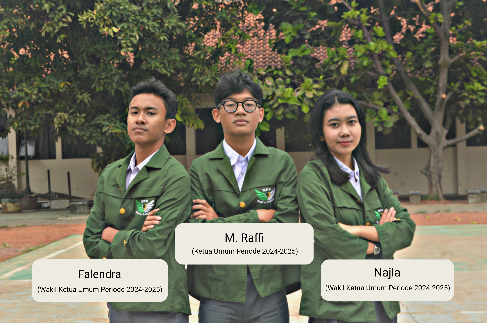
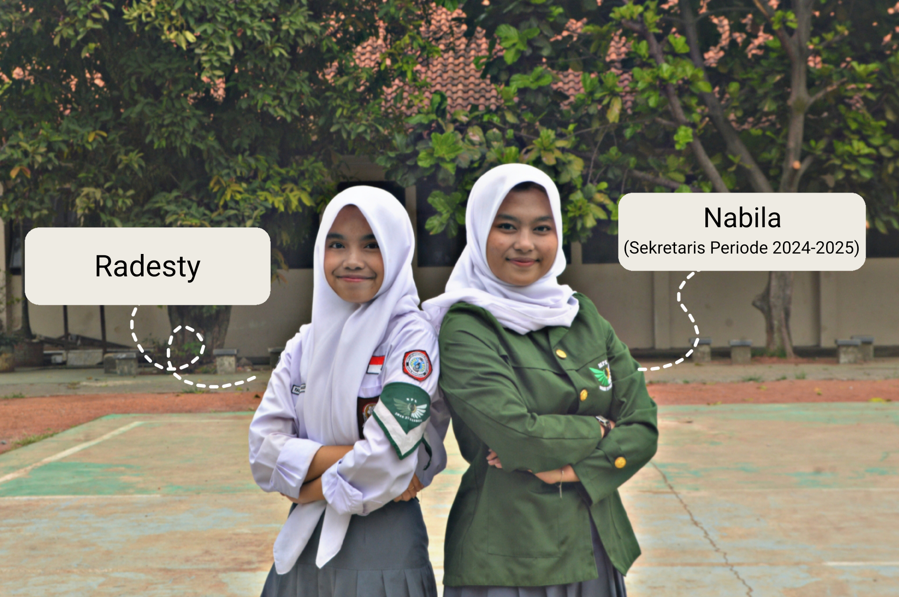
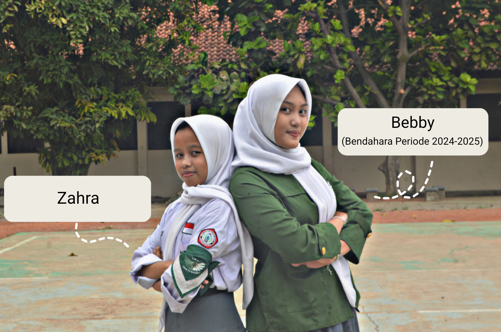
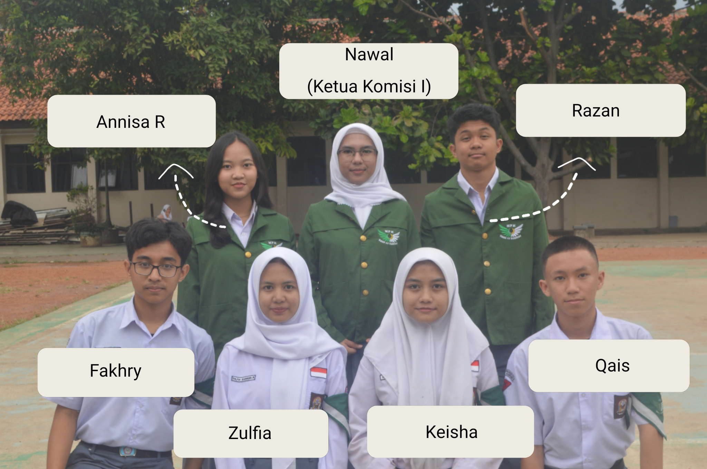
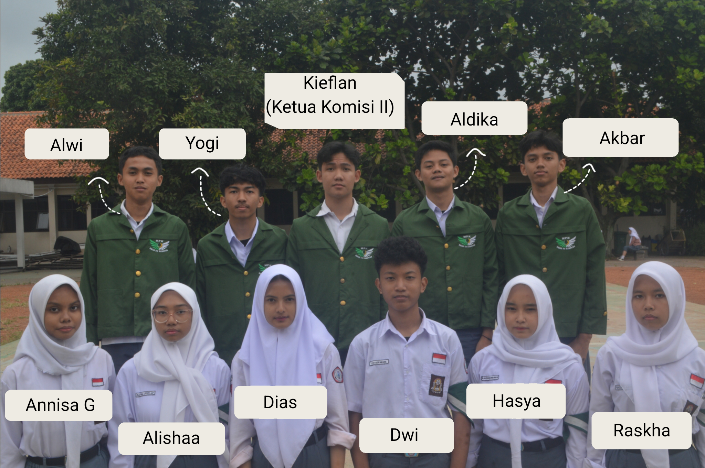
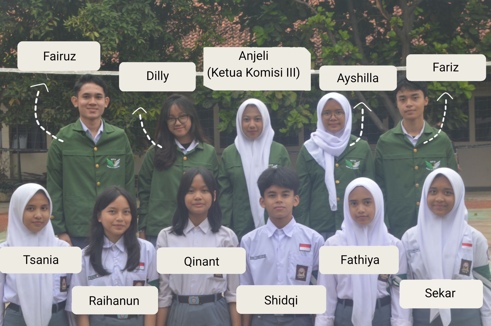

Trimitra merupakan jabatan inti dalam struktur MPK yang terdiri dari Mitratama (Ketua MPK), Mitramuda 1 (Wakil Ketua 1), dan Mitramuda 2 (Wakil Ketua 2). Ketiganya membentuk kepemimpinan tertinggi dan berperan dalam mengoordinasikan seluruh kegiatan MPK. Trimitra bertanggung jawab atas jalannya seluruh komisi dan anggota MPK, serta memastikan setiap program dan keputusan berjalan dengan terarah dan bertanggung jawab.

Sekretaris memiliki peran penting dalam menjaga kelancaran organisasi melalui pengelolaan administrasi dan dokumentasi. Tugas utamanya meliputi penyusunan proposal dan laporan, pencatatan notulensi rapat, penjadwalan kegiatan, serta pengarsipan dokumen. Sekretaris juga bertanggung jawab atas administrasi keanggotaan dan keteraturan informasi internal MPK, sehingga setiap kegiatan dapat berjalan dengan tertib dan terstruktur.

Bendahara adalah bagian dari struktur organisasi yang bertanggung jawab atas pengelolaan keuangan, termasuk pencatatan pemasukan dan pengeluaran dana, pengelolaan uang kas, serta penyusunan laporan sirkulasi keuangan agar penggunaan dana sesuai dengan kebutuhan MPK.

Komisi I Legislatif merupakan sebuah komisi yang menjalankan fungsi legislasi atau pembuatan keputusan dan aturan-aturan, serta mengelola dan mengembangkan informasi teknologi di MPK. Sehingga Komisi I memiliki dua Sub-komisi, yaitu Legislatif dan IT

Komisi II Pengawasan adalah salah satu komisi dalam struktur Majelis Perwakilan Kelas yang bertanggung jawab untuk mengawasi, mengevaluasi, dan menastikan pelaksanaan program-program yang telah direncanakan oleh osis berjalan sesuai dengan aturan dan tujuan yang telah ditetapkan

Komis III Humas memiliki tanggung jawab untuk melakukan sosialisasi informasi kegiatan MPK, membina persatuan dan kerjasama pengurus serta membantu ketua umum dalam melakukan diplomasi dengan pihak luar. Komisi III MPK memiliki peran penting dalam menyebarkan informasi tentang pengurus MPK
